Overnight Milk Bread Cinnamon Rolls
Return to Home
Jump to Ingredients
Jump to Method
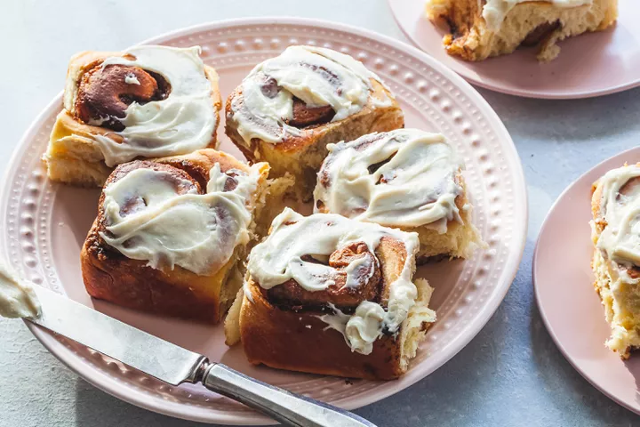
Words like fluffy, pillowy, soft, and tender don't even prepare you for the divine experience of these Milk Bread Cinnamon Rolls. Because yes, they are heavenly. The dough is dreamy and the Japanese tangzhong method of cooking milk and flour together is the secret to its softness. I confess I almost like it more than brioche! In addition to the tender, delicate dough, these rolls have a robust dose of cinnamon, sugar, and butter spiraled throughout. For the finishing touch, I slather them with buttery vanilla cream cheese icing. Make them once and these rolls will become part of your weekend repertoire too! For this recipe, I break it up over two days. Make the the dough on day one, let it sit in the fridge overnight, then in the morning, shape and roll the dough, let it rise on more time and within the hour you'll be biting into a buttery, cinnamon laden roll.
Ingredients
For the tangzhong
- 1/2 cup water
- 1/3 cup (43g) bread flour
- 1/2 cup whole milk
For the dough
- 2/3 cup cold whole milk
- 1/2 cup (1 stick) unsalted butter, melted
- 1/3 cup (66g) granulated sugar
- 1 1/2 teaspoons salt
- 2 cold large eggs
- 4 cups (480g) bread flour
- 4 1/2 teaspoons (14g) instant yeast
- 1/4 cup powdered milk
- 1/2 teaspoon nutmeg
- 2 teaspoons olive oil (for the rising bowl)
For the cinnamon filling
- 4 tablespoons unsalted butter, softened
- 3/4 cup dark brown sugar
- 1 1/2 tablespoons cinnamon
- Pinch of salt
- 1 teaspoon vanilla
For the glaze
- 4 ounces cream cheese, softened
- 3 tablespoons unsalted butter, softened
- 2 cups confectioners’ sugar
- 1/8 teaspoon salt
- 2 teaspoons vanilla extract
Method
- Make the tangzhong - In a small saucepan, over medium-low heat, add the flour, water and milk. Whisk together until smooth. Cook, whisking constantly, until it thickens to a smooth, pudding like-consistency, 4 to 5 minutes. Transfer the tangzhong to a stand mixer fitted with the paddle attachment.
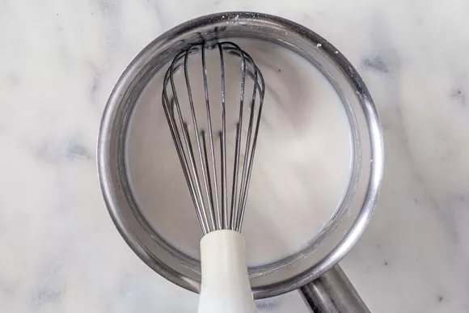
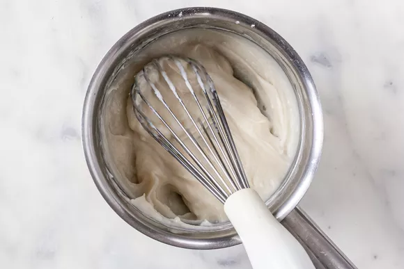
- For the dough - Add the milk, butter, sugar, and salt to the mixer bowl with the tangzhong. Mix on low speed with the paddle attachment until smooth. Add the eggs and mix until incorporated. In a separate medium bowl, add the flour, yeast, powdered milk, and nutmeg. Whisk to combine. One cup at a time, add the dry ingredients to the mixer bowl, mixing while on low speed until combined. It will be slightly sticky. Remove the paddle, cover the bowl, and let it rest for 10 minutes before kneading to give the flour time to hydrate (absorb the liquid.)
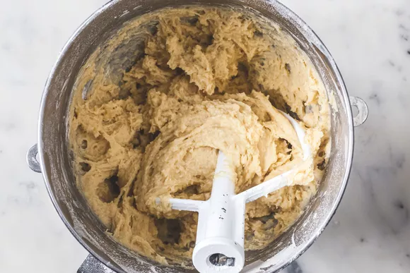
- Knead the dough - Switch to the dough hook attachment and knead the dough on low speed, until it is smooth and elastic, 8 to 10 minutes.
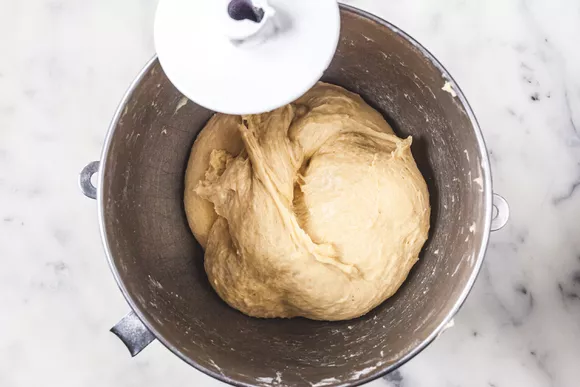
- Let the dough rise overnight - Spread the oil over the bottom and sides of a large, clean bowl. Form the dough into a ball, place it in the bowl, and turn the dough over so all sides of the dough are oiled. Cover the bowl with plastic wrap and refrigerate for 8 hours or overnight (up to 12 hours.) The dough will have risen in the refrigerator.
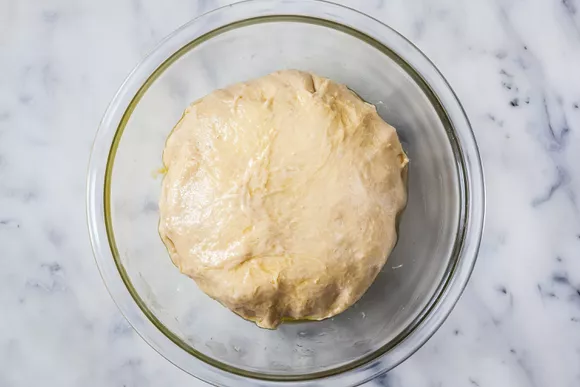
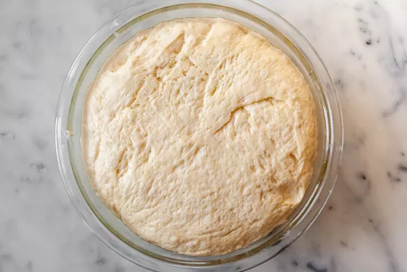
- Make the cinnamon filling - Just before shaping the rolls the next morning, in a small bowl, combine the softened butter, sugar, cinnamon, salt, and vanilla.
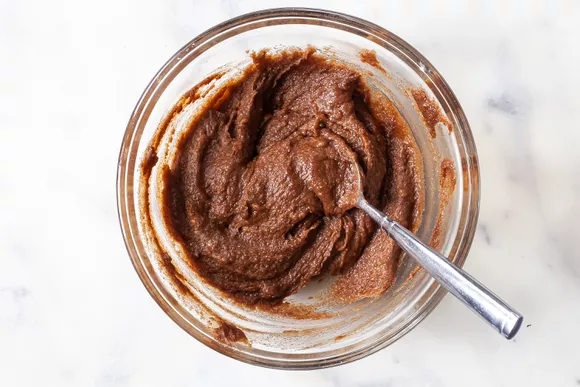
- Roll the dough into a rectangle - Set a 12-by-16-inch piece of parchment paper on your work surface and sprinkle with flour. Turn the dough onto the parchment paper and pat it into a rectangle. Roll the dough out to the same size as the parchment, stretching the corners if necessary. The dough should be around 1 1/2-inches thick.

- Prepare the baking pan - Grease a 9-by-13-inch baking pan with butter. Fit a 12-by-16-inch piece of parchment into the pan so the 2 long sides overhang by 1 1/2-inches.
- Fill, roll, and cut the dough - With an offset spatula, evenly spread the filling over the dough, leaving a border of about 1-inch all around. Position the dough so the long side is parallel to the edge of the counter. Using the parchment as an aid, roll it away from your body to form a cylinder. Firmly pinch the seam and turn the log so the seam side is down. With a paring knife, mark the log into 12 even pieces that are about 1 1/2 inches wide. Slide a 12-inch strand of unflavored dental floss or thin string under the log. Cross the ends and pull tight to cut the log into 12 slices. Set them in the baking pan with the cut side up. They should just fit in the pan and be barely touching.
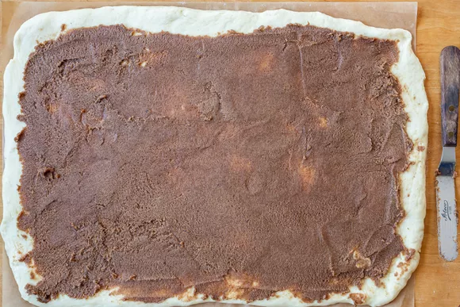
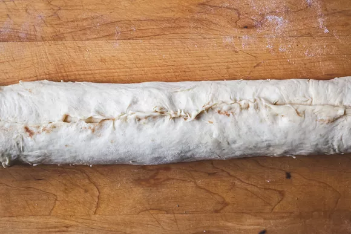
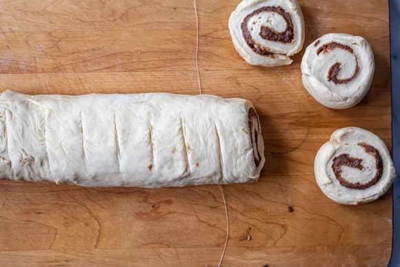
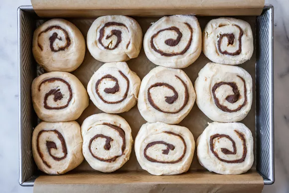
- Preheat the oven and let the dough rise at room temperature - Cover the pan loosely with plastic and let rise for 30 to 35 minutes, or until the dough looks puffy and the rolls are touching.
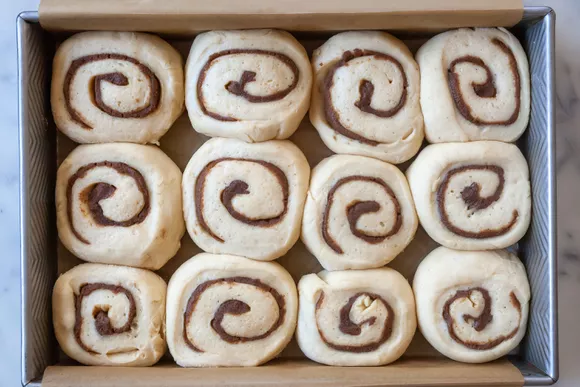
- Bake the rolls and cool - Bake the cinnamon rolls for 28 to 32 minutes, until browned and a thermometer inserted into the center of the rolls registers 190°F to 205°F. Transfer them to a rack to cool in the pan for about 10 minutes.
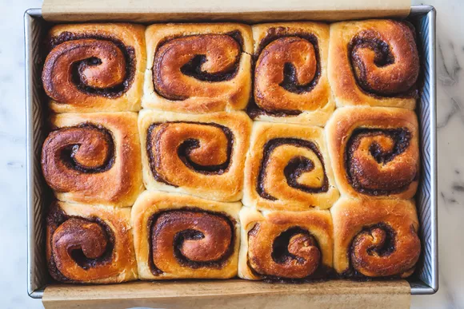
- Make the icing - In mixer bowl with the paddle attachment on medium-low, mix the cream cheese and butter for 1 minute, or until very smooth and lump free. Slowly stream in the sugar and mix until smooth. Mix in the salt and vanilla. The icing will be soft and thick but creamy and still spreadable.
- Frost the rolls and serve - Use the parchment to lift the rolls out of the pan. Ice them while still warm and serve immediately.
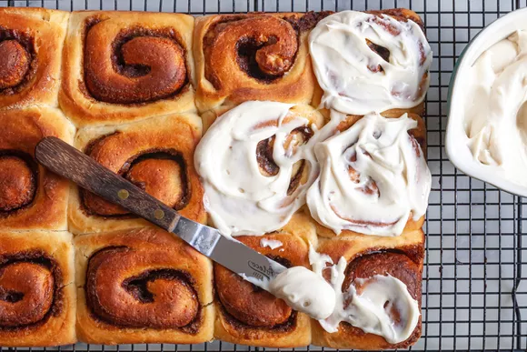
Return to Home
Return to Top